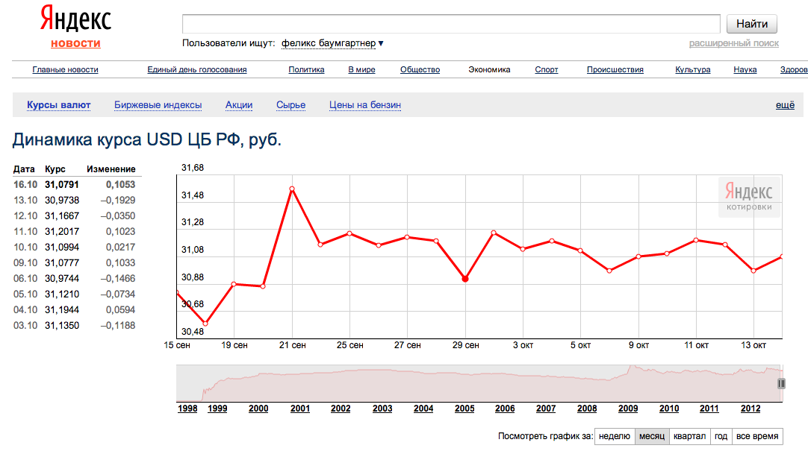
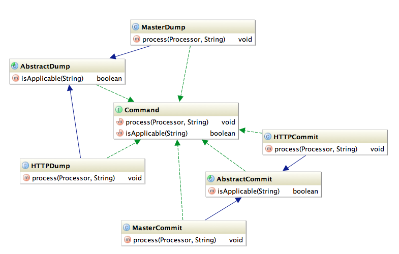

<!DOCTYPE html>
<html><head><meta http-equiv="Content-Type" content="text/html; charset=UTF-8">
    <title>Базы данных: введение</title>

    <meta charset="utf-8">
    <script src="./files/slides.js"></script>
  <style>

    /* Your individual styles here, or just use inline styles if that’s what you want. */

    .smaller {
    font-size: 80%;
    }
    
    ul li ul {
      margin-top: 1.5em;
      margin-bottom: 1em;
    }
    ul li ul li {
      margin-top: 1em;
      font-size: 80%;
    }
    ul li ul.dense li {
      margin-top: 0em;
      margin-bottom: 0em;
      font-size: 80%;
    }
    h1.center {
      text-align: center;
      font-style: italic;
    }
  </style><meta name="viewport" content="width=580,height=400"><meta name="apple-mobile-web-app-capable" content="yes"></head>

  <body style="display: none" class="loaded">

    <section class="slides layout-regular">
      
      <!-- Your slides (<article>s) go here. Delete or comment out the slides below. -->

      <article class="current">
        <h1>
          Базы данных: введение, часть четвертая
        </h1>
        <p>
          Илья Тетерин
          <br>
          2012-10-15
        </p>
        <p><i><small style="color: #ccc">(use arrow keys or PgUp/PgDown to move slides)</small></i></p>
      </article>

<article class="smaller">
<h3>Oct 10, 2011 - Сбой в работе mail.ru</h3>
<p><a href="http://www.itar-tass.com/c9/243774.html">ИТАР ТАСС: В работе российского почтового интернет-сервиса "Мейл.ру" произошел сбой</a></p>
<p>МОСКВА, 10 октября. /ИТАР-ТАСС/. Пользователи крупнейшего российского почтового сервиса "Мейл.ру" ... испытывают трудности с доступом к своим почтовым ящикам. 
При попытке проверить почту или открыть письмо на экране появляются сообщения то об ошибке сервера, то о перегрузке базы данных.</p>
<p>Проблемы с доступом к почтовому сервису начались примерно в полдень, при этом остальные сервисы портала "Мейл.ру" работают нормально.</p>
<p><a href="http://roem.ru/2011/10/10/addednews37052/">roem.ru</a> 11.10.2011: В результате внедрения новой более оптимальной системы хранения данных произошел программно-аппаратный сбой. Наши специалисты устранили проблему в течении 2-х часов. Сбой состоял в недоступности почты для примерно 8-10% пользователей. Никаких потерь или утечей данных не было.</p>
<p><a href="http://ru.wikipedia.org/wiki/Mail.Ru#.D0.A1.D1.82.D0.B0.D1.82.D0.B8.D1.81.D1.82.D0.B8.D0.BA.D0.B0">wikipedia:mail.ru</a> ... почта (22,7 млн человек ежемесячно) ...</p>
<p>pulser: 22.7м в месяц ... 756k в день ... 30 000 человек в час ... 10% - это 3 000 человек в течение часа</p>
<p>это не много, не мало - это проблемы availability в кластере ... </p>
<p class="green"> ... но они заметны на уровне ИТАР-ТАСС ...</p>
</article>

<article class="smaller">
<h3>Хочу свой маленький сервис - курс валют.</h3>
<p>Маленький сервис.</p>
<p/>
<p>Что-то типа: <span class="green">get USD 15/10/2015</span></p>
<p/>
<p>Дабы можно было в моих интернет магазинах пересчитывать цены в рубли, доллары и евро.</p>
<p><br/><a href="http://news.yandex.ru/quotes/1.html">Яндекс: Динамика курса USD ЦБ РФ, руб.</a></p>
<div class="source">Историческая справка: РБК (rbc.ru) начинался с рассылки факсом курсов валют.</div>
</article>

<article class="smaller">
<h3>А где брать информацию о курсах?</h3>
<p>Наверное надо "парсить" сайт ЦБ РФ...</p>
<p/>
<p>Ой, а у них есть технические ресурсы: <a href="http://www.cbr.ru/scripts/root.asp">http://www.cbr.ru/scripts/root.asp</a>.</p>
<p>И там есть <a href="http://www.cbr.ru/scripts/Root.asp?Prtid=SXML">Получение данных, использую XML</a></p>
<pre class="nocode">
$ curl http://www.cbr.ru/scripts/XML_dynamic.asp?\
date_req1=12/10/2012\&amp;date_req2=15/10/2012\&amp;VAL_NM_RQ=R01235

&lt;?xml version="1.0" encoding="windows-1251" ?&gt;
&lt;ValCurs ID="R01235" 
  DateRange1="12/10/2012" DateRange2="15/10/2012"
  name="Foreign Currency Market Dynamic"&gt;

&lt;Record Date="12.10.2012" Id="R01235"&gt;
  &lt;Nominal&gt;1&lt;/Nominal&gt;&lt;Value&gt;31,1667&lt;/Value&gt;&lt;/Record&gt;

&lt;Record Date="13.10.2012" Id="R01235"&gt;
  &lt;Nominal&gt;1&lt;/Nominal&gt;&lt;Value&gt;30,9738&lt;/Value&gt;&lt;/Record&gt;

&lt;/ValCurs&gt;
</pre>
</article>

<article class="smaller">
<h3>Проверим это из Java</h3>
<pre class="lang-java">
public static void main(final String[] args) throws Exception {
    // http://www.cbr.ru
    // /scripts/XML_dynamic.asp?date_req1=12/10/2012
    // &amp;date_req2=15/10/2012&amp;VAL_NM_RQ=R01235
    final URL url = new URL("http", "www.cbr.ru", 80, "" +
            "/scripts/XML_dynamic.asp" +
            "?date_req1=12/10/2012" +
            "&amp;date_req2=15/10/2012" +
            "&amp;VAL_NM_RQ=R01235");

    final URLConnection uc = url.openConnection();
    uc.connect();
    final BufferedReader ir = new BufferedReader(
        new InputStreamReader(uc.getInputStream()));
    String line;
    while ((line = ir.readLine()) != null) {
        System.out.println(line);
    }
    ir.close();
}</pre>
<p>Ура! Всё работает!</p>
<p>Можно делать сервис!</p>
</article>

<article class="smaller">
<h3>Превратим в программу ... запрос</h3>
<pre class="lang-java">
    "/scripts/XML_dynamic.asp?" +
    "date_req1=12/10/2012" +
    "&date_req2=15/10/2012" +
    "&VAL_NM_RQ=R01235");
</pre>
<p>Хотим на произвольную дату, а тут строки надо вводить.</p>
<p>Плюс торги только в рабочий день, а что на выходных?</p>
<pre class="lang-java">
final String date1 = getDateAsParameter(new Date(
    date.getTime() - 7 * 3600 * 24 * 1000));
final String date2 = getDateAsParameter(date);
final URL url = new URL("http", "www.cbr.ru", 80, "" +
    "/scripts/XML_dynamic.asp?" +
    "date_req1=" + date1 +
    "&date_req2=" + date2 +
    "&VAL_NM_RQ=R01235");

private static String getDateAsParameter(final Date dt) {
    return new SimpleDateFormat("dd/MM/yyyy").format(dt); }

public static void testDate() {
    System.out.println("mark = " + getDateAsParameter(new Date())); }

</pre>
</article>

<article class="smaller">
<h3>Превратим в программу ... распарсим ответ</h3>
<pre class="java-lang">
public static Pair&lt;Date, Double> parseLine(final String line) throws Exception {
    final Pattern pattern = Pattern.compile("" +
            "&lt;Record Date=\"(.+?)\" Id=\"R01235\"&gt;&lt;Nominal&gt;1&lt;/Nominal&gt;" + 
            "&lt;Value&gt;(.+?)&lt;/Value&gt;&lt;/Record&gt;");
    final Matcher m = pattern.matcher(line);
    if (!m.matches()) {
        return Pair.of(new Date(0), 0d);
    }
    return Pair.of(
            new SimpleDateFormat("dd.MM.yyyy").parse(m.group(1)), 
            Double.parseDouble(m.group(2).replaceAll(",", ".")));
}

public static void testPattern() {
    final Pattern pattern = Pattern.compile("" +
            "&lt;Record Date=\"(.+?)\" Id=\"R01235\"&gt;&lt;Nominal&gt;1&lt;/Nominal&gt;" + 
            "&lt;Value&gt;(.+?)&lt;/Value&gt;&lt;/Record&gt;");
    final String sample =
            "&lt;Record Date=\"13.10.2012\" Id=\"R01235\"&gt;&lt;Nominal&gt;1&lt;/Nominal&gt;" + 
            "&lt;Value&gt;30,9738&lt;/Value&gt;&lt;/Record&gt;";
    final Matcher m = pattern.matcher(sample);
    if (!m.matches()) return;
    System.out.println(m.groupCount());
    System.out.println("m1 = " + m.group(1));
    System.out.println("m2 = " + m.group(2));
}
</pre>
</article>

<article class="smaller">
<h3>Не хватает в Java? Добавь ...</h3>
<p>В Python есть понятие Tuple (x,y) ... в Java нет ... добавим :)</p>
<pre class="lang-java">public static class Pair<K, V> {
    public final K first;
    public final V second;
    private Pair(final K k, final V v) {
        this.first = k;
        this.second = v;
    }
    public static <K, V> Pair<K, V> of(final K k, final V v) {
        return new Pair<K, V>(k, v);
    }
    public String toString() {
        return "[" + first + "," + second + "]";
    }
}
public static void testPair() { // [7,gugu]
    System.out.println(Pair.of(7, "gugu"));
}
</pre>
<p>Q: What makes Java so manly?</p>
<p>A: It forces every programmer to grow a Pair.</p>
<p><a href="http://james-iry.blogspot.com/2010/05/anatomy-of-annoyance.html">http://james-iry.blogspot.com/2010/05/anatomy-of-annoyance.html</a></p>
</article>

<article class="smaller">
<h3>Основной метод</h3>
<pre class="lang-java">
public static Double getCurrency(final Date date) throws Exception {
    final String date1 = getDateAsParameter(new Date(
            date.getTime() - 7 * 3600 * 24 * 1000));
    final String date2 = getDateAsParameter(date);
    final URL url = new URL("http", "www.cbr.ru", 80, "" +
            "/scripts/XML_dynamic.asp?" +
            "date_req1=" + date1 +
            "&date_req2=" + date2 +
            "&VAL_NM_RQ=R01235");

    final URLConnection uc = url.openConnection();
    uc.connect();
    final BufferedReader ir = new BufferedReader(
        new InputStreamReader(uc.getInputStream()));
    Pair<Date, Double> max = Pair.of(new Date(0), 0d);
    String line;
    while ((line = ir.readLine()) != null) {
        final Pair<Date, Double> parsed = parseLine(line);
        if (parsed.first.after(max.first)) {
            max = parsed;
        }
    }
    ir.close();
    return max.second;
}
</pre>
</article>

<article class="smaller">
<h3>Маленькие кусочки ...</h3>
<p>1. Делаем внутренний интерфейс:</p>
<pre class="lang-java">
/**
 * Сервис получения курса валюты
 */
interface MyCurrency {
    /**
     * Возвращает курс доллара на заданную дату.
     * Данные выдаются по самой последней дате торгов.
     * @param date Date на которую нужна информация
     * @return значение курса на дату или 0 в случае ошибки 
     */
    Double getCurrency(Date date) throws Exception;
}
</pre>
<p>2. Заворачиваем в http обертку, через которую наши клиенты получают информацию.</p>
<pre>
import com.sun.net.httpserver.HttpExchange;
import com.sun.net.httpserver.HttpHandler;
import com.sun.net.httpserver.HttpServer;

public class HttpServerEx implements HttpHandler {
</pre>
</article>

<article class="build smaller">
<h3>Всё получилось ...</h3>
<p><em class="green">Тормозит</em>, бывает ... и не только на нашей стороне</p>
<p>Бывает <em class="green">банят</em> - отказывают в обслуживании, ибо слишком много запросов и слишком часто посылаем.</p>
<section>
<p/>
<p>Ответ: обернем getCurrency() в мемкеш:</p>
<pre class="lang-java">
// psevdo code !!!
public Double getCurrency(Date date) throws Exception {
   Double out = memcached.get(asKey(date));
   if ( out == null ) {
      out = main.getCurrency(date);
      memcached.put(asKey(date),out);
   }
   return out;
}
</pre>
</section>
</article>

<article class="smaller">
<h3>Почему сервис "тормозит"?</h3>
<p>Наш "сервис" - это клиент к удаленной базе. Почему он "тормозит"?</p>
<pre class="lang-java">
final String date1 = getDateAsParameter(new Date(
        date.getTime() - 7 * 3600 * 24 * 1000));
final String date2 = getDateAsParameter(date);
final URL url = new URL("http", "www.cbr.ru", 80, "" +
        "/scripts/XML_dynamic.asp?" +
        "date_req1=" + date1 +
        "&date_req2=" + date2 +
        "&VAL_NM_RQ=R01235");

final URLConnection uc = url.openConnection();
uc.connect();
final BufferedReader ir = new BufferedReader(new InputStreamReader(uc.getInputStream()));
Pair<Date, Double> max = Pair.of(new Date(0), 0d);
String line;
while ((line = ir.readLine()) != null) {
    final Pair<Date, Double> parsed = parseLine(line);
    if (parsed.first.after(max.first)) {
        max = parsed;
    }}
ir.close();
return max.second;
</pre>
</article>

<article class="smaller">
<h3>Составные части одного запроса:</h3>
<p>1. Собрать исходный запрос</p>
<p class="green">  - в нашем случае это две даты</p>
</p>
<p>2. Установить соединение по сети</p>
<p class="green">  - DNS resolve, буфера всякие, ожидания и таймауты</p>
</p>
<p>3. Дождаться обработки на удаленной стороне</p>
<p class="green">  - кто его знает, что ЦБ внутри делает для ответа</p>
</p>
<p>4. Выкачать к себе результаты</p>
<p class="green">  - сеть, несколько пакетов TCP etc</p>
</p>
<p>5. Распарсить результат из строк (сериализованная форма)</p>
<p class="green">  - в нашем случае это дата и дробное число</p>
</p>
<p>6. Закрыть сетевое соединение</p>
<p class="green">  - может включать сообщение дальней стороне "вешай трубку"</p>
</p>
</article>

<article class="smaller">
<h3>Составление запроса</h3>
<pre class="lang-java">
private static String getDateAsParameter(final Date dt) {
    return new SimpleDateFormat("dd/MM/yyyy").format(dt); }
</pre>
<p>Ой, внутри же большой жирный регекс матчинг из-за "гибкого" формата dd/MM/yyyy - вещь универсальная и не быстрая.</p>
<p/>
<h3>Парсинг результата</h3>
<pre class="smaller">
public static Pair&lt;Date, Double&gt; parseLine(final String line) throws Exception {
    final Pattern pattern = Pattern.compile("" +
            "&lt;Record Date=\"(.+?)\" Id=\"R01235\"&gt;&lt;Nominal&gt;1&lt;/Nominal&gt;" + 
            "&lt;Value&gt;(.+?)&lt;/Value&gt;&lt;/Record&gt;");
    final Matcher m = pattern.matcher(line);
    if (!m.matches()) {
        return Pair.of(new Date(0), 0d);
    }
    return Pair.of(
            new SimpleDateFormat("dd.MM.yyyy").parse(m.group(1)),
            Double.parseDouble(m.group(2).replaceAll(",", ".")));
}
</pre>
<p>Здесь и capturing регекс и формат и парсинг числа ...</p>
</article>

<article>
<h1>Почему долго работает мой запрос?</h1>
<p>На примере: дайте седьмую запись</p>
<p>Мы точно знаем что мы хотим получить и хотим получить одну единственную запись.</p>
</article>

<article>
<h3>Запрос</h3>
<ul>
<li>"наша абстрактная база":<br/><pre>http://host:port/select?id=7</pre></li>
<li>memcached / redis: <br/><pre>get 7\r\n</pre></li>
<li>SQL:<br/><pre>select * from users where id = 7</pre></li>
</ul>
</article>

<article>
<h3>SQL Select:</h3>
<pre><code>-- ключевое слово - команда
select 
-- какие поля ( * )
  fio, phone 
-- ключевое слово - разделитель
from 
-- имя коллекции
  phones 
-- ключевое слово - ограничения
where 
-- ограничения через AND / OR 
  id = 7</code></pre>
</article>

<article>
<h3>Сценарий исполнения запроса</h3>
<ul>
<li>клиент формирует запрос</li>
<li>соединяемся с базой</li>
<li>передаем запрос</li>
<li>сервер парсит запрос</li>
<li>находит коллекцию</li>
<li>получает данные</li>
<li>преобразует в формат для ответа</li>
<li>отправляет по сети</li>
<li>на клиенте восстанавливаем данные</li>
<li>закрываем соединение</li>
</ul>
</article>

<article class="smaller">
<h3>формирует запрос</h3>
<ul>
<!-- <li>Нужно знать API / синтакс команд</li> -->
<li>собрать строчку руками (Query by Language)
<pre>String sql = "select * from persons where id = " + id</pre></li>
<li>query by example (Query by Example)
<pre>Person p = new Person(); // всё остальное null
p.setLastName("Smith");
ObjectCollection oc = QueryExecutor.execute(p);</pre>
</li>
<li>построители запросов (Query by API)
<pre>Query q = new Query();
q.From("PERSON").Where(new EqCriteria("PERSON.LAST_NAME", "Smith"));
ObjectCollection oc = QueryExecutor.execute(q);</pre></li>
<li>ORM (object - relation mapping)</li>
</ul>
</article>

<article>
<h3>соединяется с базой</h3>
<pre>
Class.forName("com.mysql.jdbc.Driver");
String myDatabaseURL = "jdbc:mysql://mydomain.com/database?user=" 
    + myUsername + "&amp;password=" + myPassword;
java.sql.Connection con = DriverManager.getConnection(myDatabaseURL);</pre>
<ul>
<li>а какой shard? ( f(x)-&gt;shard )</li>
<li>dns запрос / dns cache / timeout</li>
<li>открыть socket</li>
<li>подготовить буфера</li>
</ul>
</article>

<article>
<h3>передаем запрос</h3>
<ul>
<li>простая форма - простая строка</li>
<li>QBE/QBA - обойти объекты (если сложный запрос - много объектов) = построить структуру запроса</li>
<li>сериализация (структура - поток байт)</li>
<li>отправляем Н пакетов на сервер</li>
<li>на сервере - (поток байт - структура)</li>
<li>блок памяти для обработки запроса на сервере</li>
</ul>
</article>

<article>
<h3>сервер парсит запрос</h3>
<ul>
<li>а какая команда будет?</li>
<li>валидность пришедших данных</li>
<li>к какой коллекции (таблице) обращение</li>
<li>с какими параметрами</li>
<!-- <li>precompile regexp</li> -->
<!-- <li>кеширование</li> -->
</ul>
</article>

<article class="smaller">
<h3>Пример кода обработки команд</h3>
<pre>public interface Command {
  void process(Processor p, String cmd) throws IOException;
  boolean isApplicable(String cmd); }

public abstract class AbstractDump implements Command {
  public boolean isApplicable(String cmd) {
    return "/dump".equals(cmd) || "Dump".equals(cmd); }}

public class MasterDump extends AbstractDump {
  public void process(Processor p, String cmd) throws IOException {
    boolean result = PhoneBook.getPhoneBook().dump();
    p.writeResponse(result ? "OK" : "ERROR"); }}

COMMANDS = new ArrayList<MasterCommand>();
COMMANDS.add(new MasterCommit());
COMMANDS.add(new MasterDump());

for (MasterCommand cmd : COMMANDS) {
  if (cmd.isApplicable(string)) {
    cmd.process(this, string);
    break; }} 
</pre>
<div class="source">by Ксения Мамич</div>
</article>

<article>

<div class="source">Generated in IntelliJ IDEA by yFiles</div>
</article>

<article>
<h3>находит хранилище / коллекцию</h3>
<ul>
<li>внутренний словарь данных</li>
<li>коллекция существует?</li>
<li>где находится коллекция?</li>
</ul>
</article>

<article>
<h3>получает данные из коллекции</h3>
<ul>
<li>формат коллекции (память/файл)?</li>
<li>открыть файл (какой, где, filehandle etc)</li>
<li>найти запись:<br/>
random access - а как узнать позицию?<br/>
scan - а как фильтровать? десериализовать каждую?</li>
<li>позиционирование / фрагментация файла</li>
<li>транзакция - undo logs - фрагментация</li>
<li>cache - в базе, в OS</li>
<li>зачитать данные в буфер</li>
<li>преобразовать буфер в memory structure</li>
</ul>
</article>

<article>
<h3>преобразует в данные для ответа</h3>
<ul>
<li>формат в коллекции ( если *, то все поля как есть )</li>
<li>формат в запросе ( если f1,f2 - спрячь лишнее при начитке)</li>
<li>десериализация</li>
<li>фильтрация полей/колонок</li>
</ul>
</article>

<article>
<h3>отправляет по сети</h3>
<ul>
<li>сериализация</li>
<li>буфер на стороне сервера</li>
<li>освобождение ресурсов на сервере</li>
<li>только когда клиент забрал _всё_</li>
</ul>
</article>

<article>
<h3>восстановление на клиенте</h3>
<ul>
<li>буфер для сериализованных данных</li>
<li>десериализация (поток байт в структуру памяти)</li>
<li>by hand (я знаю что жду Person и названия полей)
<pre>Person p = new Person();
p.setName(request.getParameter("name"))
p.setPhone(request.getParameter("phone"));</pre></li>
<li>ORM (подробнее - не сегодня) (wiki:<a href="http://en.wikipedia.org/wiki/List_of_object-relational_mapping_software">List of ORM Software</a>)</li>
</ul>
</article>

<article>
<h3>закрытие соединения с базой</h3>
<ul>
<li>обязательно в finally блоке</li>
<li>таймауты бывают и при закрытии</li>
</ul>
</article>

<article>
<h1>Оптимизации</h1>
<p>Что можно сделать, дабы было быстрее</p>
</article>

<article class="smaller">
<h3>Клиент и соединения</h3>
<p></p>
<p>Используем "горячий" connection - всегда держим соединение, пока жив наш клиент.</p>
<p>Connection pool (<a href="http://commons.apache.org/dbcp/">Apache DBCP</a>) - держим N соединений и отдаем их round-robin клиенту.</p>
<p>Чем плохо?</p>
<p>На стороне сервера открыт ответный сокет, удерживаются буфера етс - занята память.</p>
<p>Пример?</p>
<p>Сервер - Оракл, у нас кластер на 32 клиента, в каждом по 16 коннектов в пуле = 2 Mb * 2^5 * 2^4 = 2^10Mb памяти = 1Gb памяти сервера всегда занято.</p>
</article>

<article class="smaller">
<h3>Prepared Statement</h3>
<pre class="lang-java">
PreparedStatement ps = null;
try {
    ps = connection.prepareStatement("select name from user where user_id = ?");
    ps.setLong(1, 928303);
    final ResultSet rs = ps.executeQuery();
    return rs.next() ? rs.getString(1) : "UNKNOWN";
} finally {
    if (ps != null) {
        ps.close();
    }
}
</pre>
<p>Отдельно идет запрос, отдельно параметры.</p>
<p>Запрос "обезличен" и может кешироваться как клиентской библиотекой, так и сервером.</p>
<p>Экономия на парсинге и на проверке валидности запроса.</p>
<p>Плохо? - Параметры не учитываются при принятии решений, а это может сказаться на эффективности.</p>
</article>

<article>
<h3>Сервер и соединения</h3>
<ul>
<li>кеширование распаршенных запросов</li>
<li>prepared statement</li>
<li>cache рядов и предыдущих данных - есть шанс, что понадобятся</li>
<li>предварительно "разогретые" инстансы (наиболее частыми запросами)</li>
<li>формат сериализации - binary, закрытый</li>
</ul>
</article>

<article>
<h3>Словарь базы</h3>
<p>Коллекция, содержащая описание коллекций базы - таблиц, полей, индексов, констрейнов етс.</p>
<p>Подвержено фрагментированию и "торможению".</p>
<p>Важно при парсинге запросов.</p>
<ul>
<li>кеширование в памяти данных словаря</li>
<li>кеширование распаршенных запросов</li>
<li>изменения в словаре и транзакции</li>
</ul>
</article>

<article>
<h3>Получение данных</h3>
<ul>
<li>file cache для файлов с данными</li>
<li>количество свободной памяти vs file cache</li>
<li>memory mapped files / file page miss</li>
<li>упакованные данные / gzip / io speed vs cpu speed</li>
<li>распаковка с произвольного места / !gzip / lzo / bzip2</li>
<li>сортированный data file / binary search</li>
<li>деревья и B-tree (чтение с диска - блочное на Н килобайт)</li>
</ul>
</article>

<article>
<h3>Получение данных - индексы</h3>
<ul>
<li>индекс - <em class="green">дополнительная</em> структура для быстрого позиционирования</li>
<li>индексы vs словарь vs парсер</li>
<li>селективность (cardinality) + статистика</li>
<li>индекс и позиционирование в data file</li>
<li>два раза ищем (сначала в индексе, потом в файле)</li>
<li>... а не всегда (если данных в индексе достаточно для ответа)</li>
</ul>
</article>

<article>
<h3>Преобразование формата data file - response</h3>
<ul>
<li>Отдавать как есть - копия данных</li>
<li>Отказ от фильтрации - меньше нагрузка на CPU</li>
<li>key-value vs document vs table row</li>
<li>формат vs объем данных (trade-off space vs cpu)</li>
</ul>
</article>

<article class="smaller">
<h3>Форматы сериализации</h3>
<ul>
<li>XML - парсеры, валидация, читаем, достаточно одного файла</li>
<li><a href="http://json.org/">json</a> - как xml да еще плюс компактнее и напрямую можно использовать в браузере</li>
<li><a href="http://code.google.com/apis/protocolbuffers/">Protocol Buffers</a> - Google, жесткий, рекомпиляция</li>
<li><a href="http://thrift.apache.org/">Thrift</a> - Facebook - жесткий, рекомпиляция</li>
<li><a href="http://bsonspec.org/">bson</a> - MongoDB, компактный, нечитаем</li>
<li>... etc ...</li>
</ul>
<p><a href="https://github.com/eishay/jvm-serializers/wiki">JVM-serializers - бенчмарки</a></p>
<p><a href="http://www.predic8.com/protobuf-etch-thrift-comparison.htm">Protocol Buffers, Etch, Hadoop and Thrift Comparison</a></p>
<p><a href="http://en.wikipedia.org/wiki/IDL_(programming_language)">wiki: IDL (interface definition language)</a></p>
</article>

<article class="smaller">
<h3>Protocol buffers</h3>
<p><a href="http://code.google.com/apis/protocolbuffers/docs/overview.html">http://code.google.com/apis/protocolbuffers/docs/overview.html</a></p>
<p>Why not just use XML?</p>
<p>Protocol buffers:
<ul>
<li>are simpler</li>
<li>are 3 to 10 times smaller</li>
<li>are 20 to 100 times faster</li>
<li>are less ambiguous</li>
<li>generate data access classes that are easier to use programmatically</li>
</ul></p>
<pre class="smaller">
message SearchRequest {
  required string query = 1;
  optional int32 page_number = 2;
  optional int32 result_per_page = 3;
} </pre>
<div class="source">Source: <a href="https://developers.google.com/protocol-buffers/docs/proto">Protocol Buffers: Language Guide</a></div>
</article>

<article class="smaller">
<h3>Thrift sample</h3>

<p>Зародился в Facebook для внутреннего RPC.</p>
<p>С какого-то момента стал Apache Thrift - <a href="http://thrift.apache.org/">http://thrift.apache.org/</a> .</p>
<pre class="nocode">
namespace java pulser 
struct UserProfile {
    1: i32 uid,
    2: string name,
    3: string phone
}
service UserStorage {
    void store(1: UserProfile user),
    UserProfile retrieve(1: i32 uid)
}

thrift --gen java sample.thrift

pulser$ wc -l gen-java/pulser/*.java
     581 gen-java/pulser/UserProfile.java
    1552 gen-java/pulser/UserStorage.java

/**
 * Autogenerated by Thrift Compiler (0.8.0)
 *
 * DO NOT EDIT UNLESS YOU ARE SURE THAT YOU KNOW WHAT YOU ARE DOING
 *  @generated
 */
</pre>
</article>

<article class="smaller">
<h3>Thrift server</h3>
<pre>
package pulser;

import org.apache.thrift.TException;
import org.apache.thrift.server.TServer;
import org.apache.thrift.server.TServer.Args;
import org.apache.thrift.server.TSimpleServer;
import org.apache.thrift.transport.TServerSocket;
import org.apache.thrift.transport.TServerTransport;

public class MyThriftServer {
    public static void startServer(final UserStorage.Processor<MyHandler> processor) 
           throws Exception {
        final TServerTransport serverTransport = new TServerSocket(9090);
        final TServer server = new TSimpleServer(
                new Args(serverTransport).processor(processor));

        // Use this for a multithreaded server
        // TServer server = new TThreadPoolServer(new
        // TThreadPoolServer.Args(serverTransport).processor(processor));

        System.out.println("Starting the simple server...");
        server.serve();
    }

    public static void main(final String[] args) throws Exception {
        startServer(new UserStorage.Processor<MyHandler>(new MyHandler()));
    }
}</pre>
</article>

<article class="smaller">
<h3>Thrift client</h3>
<pre class="lang-java">
public class MyThriftClient {
    public static void main(final String[] args) {
        try {
            final TTransport transport = new TSocket("localhost", 9090);
            transport.open();
            final UserStorage.Client client = new UserStorage.Client(
                    new TBinaryProtocol(transport));
            System.out.println(client.retrieve(7));
            transport.close();
        } catch (TTransportException e) {
            e.printStackTrace();
        } catch (TException x) {
            x.printStackTrace();
        }
    } 
}
class MyHandler implements UserStorage.Iface {
    public void store(final UserProfile user) throws TException {
        System.out.println("user = " + user);
    }

    public UserProfile retrieve(final int uid) throws TException {
        return new UserProfile(7, "Ivanov", "8-800-MEGA-623");
    } 
}
</pre>
<div class="source">Through: <a href="http://java.dzone.com/articles/apache-thrift-java-quickstart">Java DZone: Apache Thrift with Java Quickstart</a></div>
</article>


      <article class="smaller">
        <h3>Итого</h3>
<ul>
<li>Вы не всегда владеете источником информации.</li>
<li>"Не заспамь источник данных!" - забанить могут.</li>
<li>Запрос в базу состоит из многих шагов.</li>
<li>Каждый шаг можно оптимизировать и ускорять.</li>
<li>Профессионал знает и представляет все шаги процесса.</li>
<li>Всегда есть альтернативные решения.</li>
</ul>
        <h3>Вопросы?</h3>
        <ul>
          <li><a rel="author" href="http://fluffypulser.ru/about.html">Илья Тетерин</a></li>
          <li><a href="http://twitter.com/ya_pulser">@ya_pulser</a></li>
          <li>email: ya.pulser at gmail.com</li>
          <li><a href="http://fluffypulser.ru/static/dbcourse.2012/index.html">http://fluffypulser.ru/static/dbcourse.2012/index.html</a></li>
        </ul>
      </article>

    <div class="slide-area" id="prev-slide-area"></div><div class="slide-area" id="next-slide-area"></div></section>

<!--
TODO:
  -- tedious example: wall art -> mosaic?
-->
<link rel="stylesheet" type="text/css"><link rel="stylesheet" type="text/css" href="./files/styles.css"><script type="text/javascript" src="./files/prettify.js"></script></body></html>
